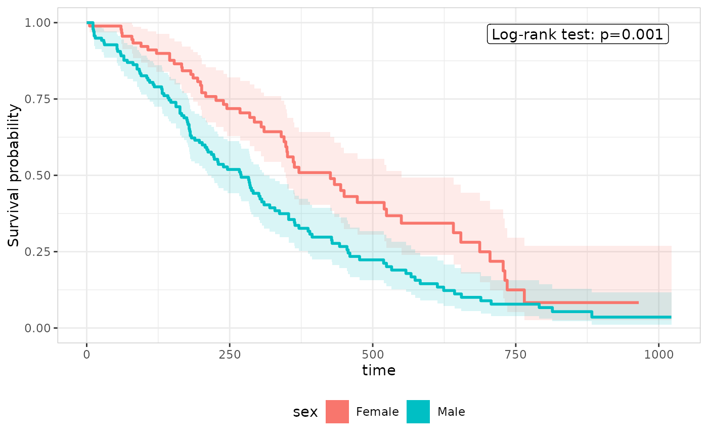

Log-rank test annotation builders for the TTE grammar
Source:R/er-tte-style-pvalue.R
er_style_tte_pvalue.RdBuilder functions for the pvalue layer (er_tte_add_pvalue()),
drawing a corner-placed text/label annotation from a log-rank test
comparing survival across stratify_by's levels.
Usage
er_style_tte_pvalue_logrank(
data,
config,
stratify,
time,
strata,
theme,
...,
inset = 0.05,
label_size = NULL,
label_colour = NULL,
label_fill = NULL
)Arguments
- data
The original data frame (
object$data).- config
Configuration for the pvalue layer (see
.layer_tte_pvalue()):config$p_value(the log-rank test's p-value) andconfig$corner_distance(how uncrowded each panel corner is, relative to the plotted survival curve(s) – seeer_style()'s?er_plot_add_summary()-analogous corner-placement idiom).- stratify
Logical: always
TRUEhere, sinceer_tte_add_pvalue()requires a stratifieder_tteobject.- time
object$time(name/label/limits).- strata
object$strata(var/label/type/n_strata).- theme
object$theme–theme$format_pformats the p-value.- ...
Additional named arguments forwarded from
er_tte_add_pvalue()'s own....- inset
Distance from the panel edge for the annotation label, as a fraction of the panel's width/height. Default
0.05.- label_size
Label text size.
- label_colour
Label text colour.
- label_fill
Label background fill.
Details
er_style_tte_pvalue_logrank() places its annotation in whichever of
the panel's 4 corners is currently furthest from the survival
curve(s), using the same (0, 1)-rescaled corner-distance
calculation er_plot_add_summary()'s own p-value annotation uses to
avoid a plot's raw data points – here applied to the curve's own
(time, surv) coordinates instead, since there's no raw per-subject
scatter in this grammar for the annotation to avoid.
er_style_tte_pvalue_logrank() is tagged er_style_tag(fn, layer = "pvalue"), so er_tte_add_pvalue() errors informatively if handed a
builder tagged for a different layer.
Examples
library(survival)
lung |>
transform(sex = factor(sex, labels = c("Male", "Female"))) |>
er_tte(time, status == 2, stratify_by = sex) |>
er_tte_add_curve() |>
er_tte_add_pvalue(style = er_style_tte_pvalue_logrank, label_fill = "white") |>
plot()
